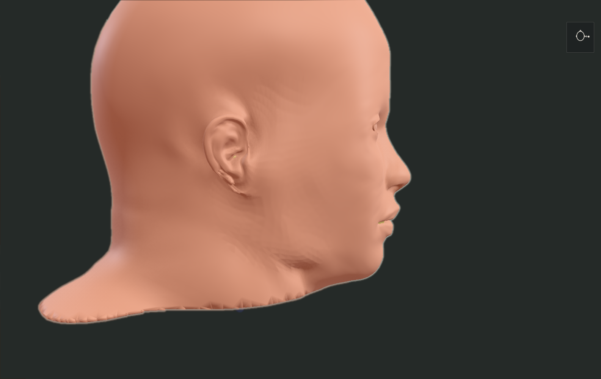
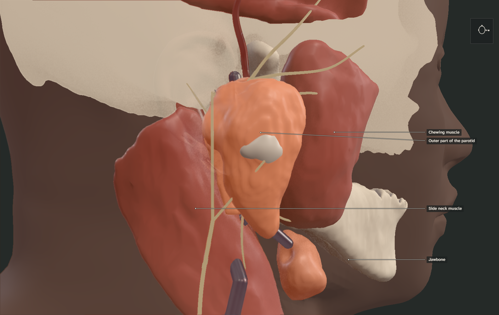
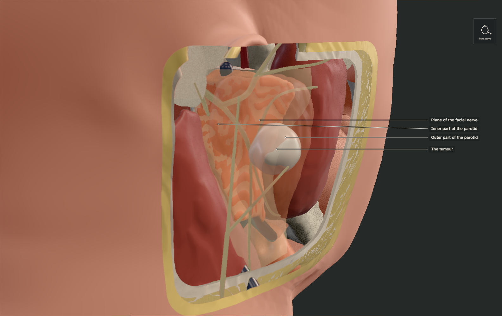
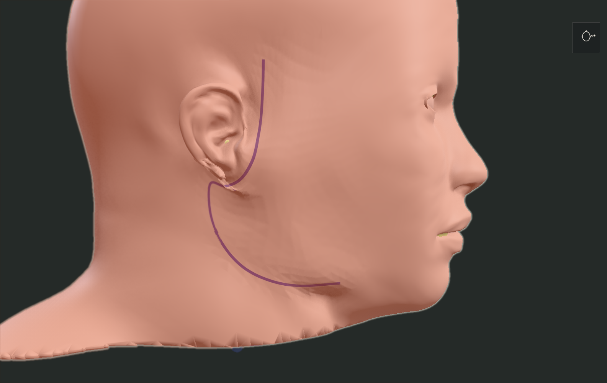
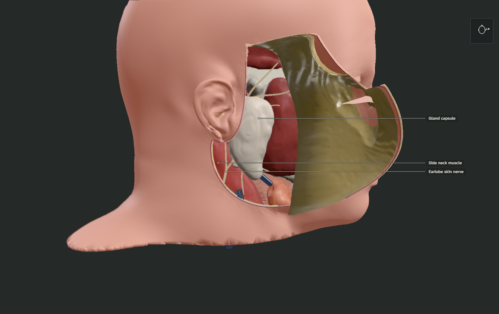
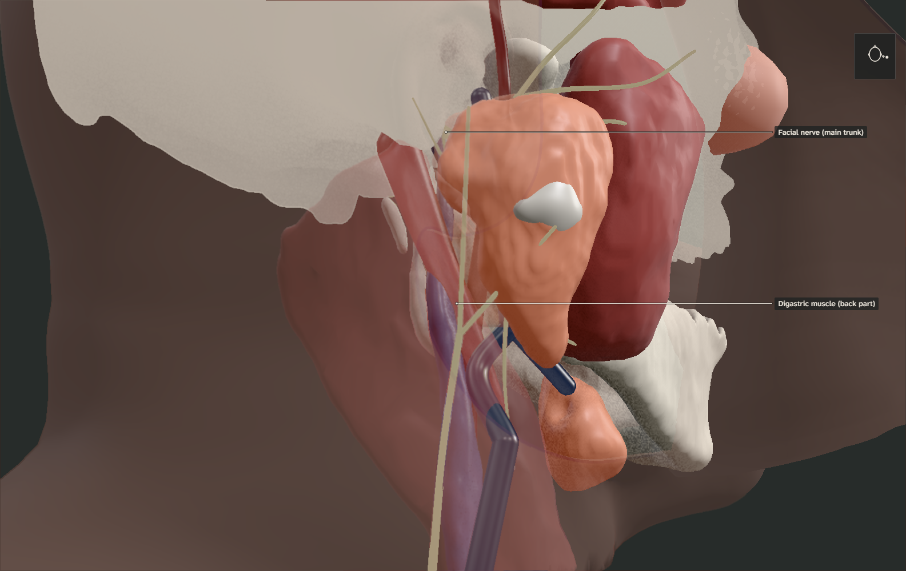
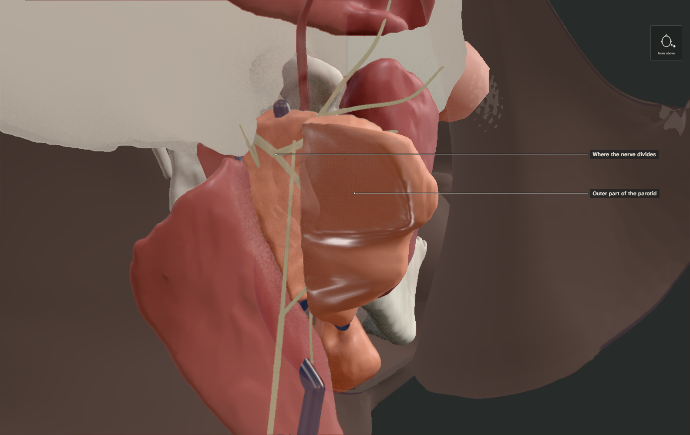

Generated 2026-09-29 from the content, the QC checks and the self-review checklist (npm run review). Clinical review happens after implementation (owner decision); nothing here is clinically signed off. Limits and open items are recorded in docs/qc/QC_LOG.md and docs/STATUS.md.
| Check | Result | Summary |
|---|
| trunk_length_mm | pass | 17.2 mm (Pather range 8.6–22.8; means 14.0 and 16.4) |
| pes_inside_parotid | pass | signed distance -2.5 mm (negative = inside) |
| nerve_lateral_to_rmv | pass | 316 level-matched pairs, 0 violations, min clearance 0.3 mm |
| eca_deep_to_rmv | pass | 516 pairs, 0 violations, min clearance 0.1 mm |
| eca_deep_to_digastric | pass | 367 pairs, 0 violations, min clearance 0.5 mm |
| branch_order_superior_to_inferior | pass | temporal=277 > zygomatic=258 > buccal=250 > marginal_mandibular=201 |
| mm_near_mandible_border | pass | distal half within 7.0 mm of the mandible surface |
| temporal_superficial_to_arch | pass | min clearance from skull 1.4 mm |
| no_bone_intersection | pass | none |
| landmark_distances | pass | tympanomastoid_dropoff 3.2 mm in ['witt-2005', 'rea-2010']; digastric_origin 10.3 mm in ['witt-2005', 'pather-osman-2006']; styloid_base 9.2 mm in ['pather-osman-2006']; tragal_pointer 18.9 mm in no study range (reported only) |
| no_tube_contacts | pass | no unintended contacts between authored structures |
| graph_connected_single_root | pass | 10 facial-nerve segments, all descend from the foramen |
| deep_lobe_completion | pass | authored retromandibular portion adds 7.7 mL to the 18.0 mL segmented gland |
| superficial_fraction | pass | 59.2% of the completed gland lies lateral to the nerve plane (Pujol-Olmo 2020: 61–69% by weight in 19 specimens; reported, not tuned) |
| vessels_within_gland | pass | 100% of the retromandibular vein centreline within the gland between its entry and lower pole |
| tumour_placement | pass | 19 mm, 100% superficial to the nerve plane, 100% within the gland, nerve clearance 1.6 mm |
| face_fit | pass | conform-region residual median 0.66 mm (p95 2.05); shallowest soft tissue 2.38 mm and bone 1.76 mm below the skin; 14% of head vertices conformed |
| deep_lobe_muscle_overlap | pass | 1% of deep-lobe voxels within 4 mm of the posterior digastric are muscle-density (>= 20 HU) |
| incision_flap | pass | modified Blair incision 162 mm (projected); flap fields baked on skin and subcutaneous fat; auricle excluded |
| Area | Statement | Compared against | Evidence | Self-review | Clinical |
|---|
| Parotid gland | The gland lies in front of and below the ear, over the posterior masseter, wrapping behind the ramus, in front of the sternocleidomastoid. | Source CT with TotalSegmentator masks; Visible Human cryosections a_vm1160/1175/1190; standard atlas lateral view | docs/qc/m0-registration/ct_axial_1149.png
docs/qc/m1-cryo/cryo_1175.jpg | pass: Segmented from the donor CT; lateral boundary matches the photographed gland edge within about 3 mm. | pending |
| Parotid gland | Superficial and deep 'lobes' are defined by the facial-nerve plane (a surgical construct, not true lobes). | Pujol-Olmo 2020 (61-69% superficial by weight, 19 specimens) | docs/qc/m1-anatomy/lobe_split_axial.png
docs/qc/m1-anatomy/checks.json | limit: 59% superficial in this model (reported, not tuned); the plane is a smooth surface through the authored nerve. | pending |
| Parotid gland | The retromandibular (deep) portion is authored within anatomical bounds because the CT does not resolve it; muscle-density tissue beside the posterior digastric is excluded. | CT density; cryosection a_vm1175 | docs/qc/m1-anatomy/deep_lobe_digastric.png
docs/qc/m1-cryo/cryo_1175.jpg | limit: Authored region (7.7 mL); the stylomandibular-tunnel extension is not modelled; the cryosection overlay still suggests about 3 mm overlap with muscle at z 231, within registration uncertainty. | pending |
| Facial nerve | The trunk leaves the stylomastoid foramen, runs about 1.5 cm, enters the gland, divides at the pes and fans into five branch groups. | Cited trunk-length range 8.6-22.8 mm; landmark picks on CT | docs/qc/m1-anatomy/authored_views.png
docs/qc/m1-anatomy/checks.json | limit: Trunk 17.2 mm. One common pattern without interconnections; not verified against cryosections (the nerve is not resolvable at 0.33 mm/px). | pending |
| Facial nerve and vessels | Within the gland the nerve lies lateral (superficial) to the retromandibular vein; the external carotid lies deep to the vein. | Relationship checks on CT; cryosection overlays at three levels | docs/qc/m1-anatomy/checks.json
docs/qc/m1-cryo/cryo_1160.jpg
docs/qc/m1-cryo/cryo_1190.jpg | pass: Relationships hold; the authored vessels lie 1-5 mm from the photographed vessels, within registration uncertainty. | pending |
| Surgical landmarks | Tympanomastoid suture, posterior belly of the digastric, tragal pointer and styloid relate to the trunk as described. | Witt 2005, Rea 2010, Pather 2006, Cannon 2004 (measured distances disagree) | docs/qc/m1-landmarks/stylomastoid_search.png
docs/qc/m1-anatomy/checks.json | limit: The tragal-pointer distance (19.7 mm) is outside both study ranges; the claim is marked uncertain and the distance is reported, not asserted. | pending |
| Great auricular nerve | The great auricular nerve ascends over the sternocleidomastoid toward the lobule, dividing near the lower pole of the gland. | StatPearls; relationship to the SCM surface | pipeline/specs/anatomy.yaml | limit: Authored from the spec on the SCM surface; not traced on cryosections. | pending |
| Pleomorphic adenoma | A 2 cm pleomorphic adenoma in the superficial lobe, clear of the nerve. | Authored for teaching (size and position), not taken from imaging | docs/qc/m1-anatomy/lobe_split_axial.png | pass: 19 mm, entirely lateral to the nerve plane, 1.6 mm from the nearest branch; the skin fullness over it is authored (up to 2.2 mm). | pending |
| Tissue layers | Skin, subcutaneous fat, SMAS and the gland capsule, in that order from outside. | Depth bands under the fitted skin | pipeline/anatomy/layers.py
docs/qc/m1-anatomy/checks.json | limit: Layers are constant-depth bands (fat to 7 mm, SMAS 1.3 mm, capsule 1 mm), not segmented; the capsule is thin because the gland lies 3.9 mm under the skin at the lower pole in the source CT. | pending |
| Operation | A modified Blair incision: preauricular crease, around the lobule, into a neck crease below the angle. | Iowa protocol; StatPearls (representative technique) | docs/qc/m1-anatomy/incision_flap.png | pass: Representative, not universal; the facelift variant is out of M1 scope. | pending |
| Operation | The skin flap is raised superficial to the parotid fascia and held forward. | Iowa protocol; StatPearls | docs/qc/m1-anatomy/incision_flap.png | limit: Skin and fat fold forward as one curl; the neck part is subplatysmal in practice but there is no platysma mesh, so the operative plates hide the SMAS outside the capsule. | pending |
| Operation | Antegrade dissection lifts the superficial lobe off the nerve branches with the tumour inside it. | Representative superficial parotidectomy | pipeline/anatomy/surfaces.py | limit: The peel is a fold driven by an antegrade order field; it shows the principle, not tissue mechanics. | pending |
| Model | The face is generic (MPFB, CC0), not the donor's. | Face fit report | docs/qc/m1-anatomy/face_fit.png | pass: Conformed to the CT only over the dissection field; the central face is unconformed MPFB. | pending |
1. A lump in front of the ear Where the parotid is

The parotid gland sits in front of and below the ear, wrapped around the back edge of the jaw. [parotid-location] Most lumps that grow in it are benign, and the most common is a pleomorphic adenoma. [pa-most-common]
This atlas follows one such tumour, from the anatomy around it to the operation that removes it. The small head at the top right shows where you are looking from. The model is built from one donated body, with some structures drawn to published anatomy where scans cannot show them, and a generic face. [model-provenance]
Scene description (screen readers, static figure): The right side of a generic adult head seen from the side, face to the right. The skin is intact; a slight fullness sits in front of and below the ear.
Checklist items
| Area | Statement | Compared against | Evidence | Self-review | Clinical |
|---|
| Pleomorphic adenoma | A 2 cm pleomorphic adenoma in the superficial lobe, clear of the nerve. | Authored for teaching (size and position), not taken from imaging | docs/qc/m1-anatomy/lobe_split_axial.png | pass: 19 mm, entirely lateral to the nerve plane, 1.6 mm from the nearest branch; the skin fullness over it is authored (up to 2.2 mm). | pending |
| Model | The face is generic (MPFB, CC0), not the donor's. | Face fit report | docs/qc/m1-anatomy/face_fit.png | pass: Conformed to the CT only over the dissection field; the central face is unconformed MPFB. | pending |
Claims
parotid-location established-anatomy sources to verify clinical review: pending
Essentials: The parotid gland sits in front of and below the ear, wrapped around the back edge of the jaw and lying over the chewing muscle.
Anatomy: The parotid occupies the retromandibular region, overlying the posterior masseter and the ramus, anterior to the ear and the sternocleidomastoid.
- El Sayed Ahmad Y, Winters R 2026. Parotidectomy. StatPearls (NCBI Bookshelf). reference-chapter [active] link
- Kochhar A, Larian B, Azizzadeh B 2016. Facial Nerve and Parotid Gland Anatomy. Otolaryngol Clin North Am. narrative-review [active] link
pa-most-common established-anatomy sources to verify clinical review: pending
Essentials: Most lumps in the parotid are benign, and the most common is a pleomorphic adenoma.
Anatomy: Pleomorphic adenoma is the most common salivary gland neoplasm and arises most often in the parotid.
Share of all salivary gland tumours: 60 % (range 45–75); Salivary gland tumours in published series; Narrative reference chapter (secondary)
Arising in the parotid: 84 %; Pleomorphic adenomas in published series; Narrative reference chapter (secondary)
Limitations: Secondary source; the share of Warthin tumour has risen in some regions (Franzen 2018), so proportions vary by era and place.
- Menon G, Winters R 2025. Pleomorphic Adenoma. StatPearls (NCBI Bookshelf). reference-chapter [active] link
- Eveson JW, Cawson RA 1985. Salivary gland tumours. A review of 2410 cases with particular reference to histological types, site, age and sex distribution. J Pathol. case-series [active] (indirect) link
model-provenance established-anatomy sources to verify clinical review: pending
Essentials: The model is built from one donated body (the Visible Human Project), with some structures drawn by hand where scans cannot show them, and a generic face.
Anatomy: Bones, glands and muscles are segmented from the Visible Human male CT; the facial nerve, small vessels, the gland's deep portion and the face surface are authored to cited anatomy; the tumour is illustrative.
Limitations: One individual; authored parts follow published ranges but are not measured from this body. See the QC log.
- Triantafyllou G, Tsiouris C, Chrysanthou I et al. 2024. Extratemporal Facial Nerve Interconnections and Trunk's Variability: A Systematic Review with Meta-Analysis. Diagnostics (Basel). meta-analysis [active] (indirect) link
- Pujol-Olmo A, Mirapeix RM, Sañudo-Tejero JR et al. 2020. Description and relationships of the parotid gland levels proposed by the European Salivary Gland Society staging system: an anatomical study. Surg Radiol Anat. anatomical-study [active] (indirect) link
2. Where the gland lies Where the parotid is

With the skin faded, the gland appears. It is the largest salivary gland, weighing about 18 g. [parotid-size] It lies over the back of the chewing muscle (masseter) and wraps behind the jawbone, in front of the long muscle of the neck. [parotid-location]
Scene description (screen readers, static figure): The skin is faded to a faint outline. The parotid gland is shown in front of and below the ear canal, lying over the back of the jaw and the chewing muscle (masseter), with the neck muscle (sternocleidomastoid) behind and below it.
Checklist items
| Area | Statement | Compared against | Evidence | Self-review | Clinical |
|---|
| Parotid gland | The gland lies in front of and below the ear, over the posterior masseter, wrapping behind the ramus, in front of the sternocleidomastoid. | Source CT with TotalSegmentator masks; Visible Human cryosections a_vm1160/1175/1190; standard atlas lateral view | docs/qc/m0-registration/ct_axial_1149.png
docs/qc/m1-cryo/cryo_1175.jpg | pass: Segmented from the donor CT; lateral boundary matches the photographed gland edge within about 3 mm. | pending |
Claims
parotid-size established-anatomy sources to verify clinical review: pending
Essentials: The parotid is the largest salivary gland, weighing about 18 g.
Anatomy: Mean gland dimensions about 66 × 47 mm and weight about 18 g.
Mean gland weight: 18.1 g; Adult anatomical specimens, 19 specimens; Anatomical dissection study
- Pujol-Olmo A, Mirapeix RM, Sañudo-Tejero JR et al. 2020. Description and relationships of the parotid gland levels proposed by the European Salivary Gland Society staging system: an anatomical study. Surg Radiol Anat. anatomical-study [active] link
parotid-location established-anatomy sources to verify clinical review: pending
Essentials: The parotid gland sits in front of and below the ear, wrapped around the back edge of the jaw and lying over the chewing muscle.
Anatomy: The parotid occupies the retromandibular region, overlying the posterior masseter and the ramus, anterior to the ear and the sternocleidomastoid.
- El Sayed Ahmad Y, Winters R 2026. Parotidectomy. StatPearls (NCBI Bookshelf). reference-chapter [active] link
- Kochhar A, Larian B, Azizzadeh B 2016. Facial Nerve and Parotid Gland Anatomy. Otolaryngol Clin North Am. narrative-review [active] link
4. The tumour in the outer part of the gland The tumour
The tumour shown is about 2 cm across, in the outer part of the gland. Its covering is often thin or incomplete, and small extensions can reach beyond it — one reason surgeons remove a cuff of normal gland around the tumour rather than shelling it out. [pa-capsule-features]
Scene description (screen readers, static figure): The gland capsule is opened. Within the outer part of the gland, partly see-through, a pale lobulated mass about 2 cm across sits just under the gland surface.
Checklist items
| Area | Statement | Compared against | Evidence | Self-review | Clinical |
|---|
| Pleomorphic adenoma | A 2 cm pleomorphic adenoma in the superficial lobe, clear of the nerve. | Authored for teaching (size and position), not taken from imaging | docs/qc/m1-anatomy/lobe_split_axial.png | pass: 19 mm, entirely lateral to the nerve plane, 1.6 mm from the nearest branch; the skin fullness over it is authored (up to 2.2 mm). | pending |
Claims
pa-capsule-features established-anatomy sources to verify clinical review: pending
Essentials: A pleomorphic adenoma's outer layer is often thin or incomplete, and small finger-like extensions can reach beyond it, which is why surgeons remove a cuff of normal gland around it.
Anatomy: Pleomorphic adenomas frequently have an incomplete capsule, capsular penetration, pseudopodia or satellite nodules; these features are associated with recurrence after enucleation or rupture.
Incomplete capsule: 33 %; Resected parotid pleomorphic adenomas, 218 tumours; Histopathological case series
Pseudopodia: 40 %; Resected parotid pleomorphic adenomas, 218 tumours; Histopathological case series
At least one capsular feature: 73 %; Resected parotid pleomorphic adenomas, 218 tumours; Histopathological case series
- Zbären P, Stauffer E 2007. Pleomorphic adenoma of the parotid gland: histopathologic analysis of the capsular characteristics of 218 tumors. Head Neck. case-series [active] link
- Dulguerov P, Todic J, Pusztaszeri M et al. 2017. Why Do Parotid Pleomorphic Adenomas Recur? A Systematic Review of Pathological and Surgical Variables. Front Surg. systematic-review [active] link
5. The nerve that runs through the gland The nerve inside the gland
The facial nerve — the nerve that moves the face — leaves the skull just behind the jaw and passes straight into the gland. [fn-exits-stylomastoid-foramen] Its main trunk runs only about 1.5 cm before dividing, [fn-trunk-length] and its branches fan out to the forehead, eyelids, cheek, lower lip and neck. [fn-five-branch-groups]
The branching pattern differs between people; this is one common arrangement. [fn-branching-variation]
Scene description (screen readers, static figure): The outer gland is nearly transparent. An ivory nerve, about 2–3 mm thick, leaves the skull behind the jaw, enters the gland, divides in two, and fans forward into five groups of branches toward the forehead, eyelids, cheek, lower lip and neck.
Checklist items
| Area | Statement | Compared against | Evidence | Self-review | Clinical |
|---|
| Facial nerve | The trunk leaves the stylomastoid foramen, runs about 1.5 cm, enters the gland, divides at the pes and fans into five branch groups. | Cited trunk-length range 8.6-22.8 mm; landmark picks on CT | docs/qc/m1-anatomy/authored_views.png
docs/qc/m1-anatomy/checks.json | limit: Trunk 17.2 mm. One common pattern without interconnections; not verified against cryosections (the nerve is not resolvable at 0.33 mm/px). | pending |
Claims
fn-exits-stylomastoid-foramen established-anatomy sources to verify clinical review: pending
Essentials: The facial nerve leaves the skull through a small opening behind the ear, between two bony points, and passes straight into the parotid gland.
Anatomy: The extratemporal facial nerve exits the stylomastoid foramen, between the styloid and mastoid processes, and enters the posteromedial surface of the parotid gland.
Limitations: Wording taken from narrative and reference sources; not a measurement.
- El Sayed Ahmad Y, Winters R 2026. Parotidectomy. StatPearls (NCBI Bookshelf). reference-chapter [active], Anatomy link
- Kochhar A, Larian B, Azizzadeh B 2016. Facial Nerve and Parotid Gland Anatomy. Otolaryngol Clin North Am. narrative-review [active] link
fn-trunk-length established-anatomy sources to verify clinical review: pending
Essentials: The main trunk of the nerve runs only about 1.5 cm before it divides.
Anatomy: The extratemporal trunk measures roughly 14–16 mm from the stylomastoid foramen to its bifurcation, with wide individual variation.
Trunk length, foramen to bifurcation: 14 mm (range 8.6–22.8); Adult cadavers, 40 cadavers; Cadaveric dissection study
Trunk length, foramen to bifurcation: 16.44 mm; Adult cadavers, both sides, 23 cadavers; Microsurgical cadaveric study (mean ± SD 3.2 mm)
Disagreement: Means differ by about 2.4 mm between the two cadaveric series; ranges overlap.
- Pather N, Osman M 2006. Landmarks of the facial nerve: implications for parotidectomy. Surg Radiol Anat. cadaveric-study [active] link
- Salame K, Ouaknine GE, Arensburg B et al. 2002. Microsurgical anatomy of the facial nerve trunk. Clin Anat. cadaveric-study [active] link
fn-five-branch-groups established-anatomy sources to verify clinical review: pending
Essentials: The nerve fans out into five groups of branches that move the forehead, eyelids, cheek, lower lip and neck.
Anatomy: Five terminal branch groups: temporal (frontal), zygomatic, buccal, marginal mandibular and cervical.
- El Sayed Ahmad Y, Winters R 2026. Parotidectomy. StatPearls (NCBI Bookshelf). reference-chapter [active] link
- Kochhar A, Larian B, Azizzadeh B 2016. Facial Nerve and Parotid Gland Anatomy. Otolaryngol Clin North Am. narrative-review [active] link
fn-branching-variation established-anatomy sources to verify clinical review: pending
Essentials: The branching pattern differs from person to person; the pattern shown here is one common arrangement.
Anatomy: Interconnections between branches are common and follow several recognised patterns (Davis types I–VI); no classification captures all variants.
Davis type I (no interconnections): 15.5 %; Pooled cadaveric and intraoperative series; Systematic review and meta-analysis
Davis type III (one temporofacial–cervicofacial interconnection): 23.1 %; Pooled cadaveric and intraoperative series; Systematic review and meta-analysis
Limitations: The authors conclude that no classification describes the variability well.
- Triantafyllou G, Tsiouris C, Chrysanthou I et al. 2024. Extratemporal Facial Nerve Interconnections and Trunk's Variability: A Systematic Review with Meta-Analysis. Diagnostics (Basel). meta-analysis [active] link
- Davis Ra, Anson Bj, Budinger Jm et al. 1956. Surgical anatomy of the facial nerve and parotid gland based upon a study of 350 cervicofacial halves. Surg Gynecol Obstet. cadaveric-study [active] (indirect) link
- Katz AD, Catalano P 1987. The clinical significance of the various anastomotic branches of the facial nerve. Report of 100 patients. Arch Otolaryngol Head Neck Surg. case-series [active] link
6. Outer and inner parts of the gland The nerve inside the gland

The gland has no true lobes: surgeons call the tissue on the outer side of the nerve "superficial" and the rest "deep". By weight, about two-thirds lies on the outer side. [parotid-lobes-surgical] A large vein runs down through the deep part, just inside the nerve — scans use it to estimate where the nerve lies. [fn-lateral-to-retromandibular-vein]
The tumour here is entirely on the outer side of the nerve, which shapes the choice of operation.
Scene description (screen readers, static figure): Seen from behind and above, a translucent sheet marks the plane the nerve lies in. Gland tissue on the outer side of the sheet is the superficial lobe and contains the tumour; tissue on the inner side, around the large vein behind the jaw, is the deep lobe.
Checklist items
| Area | Statement | Compared against | Evidence | Self-review | Clinical |
|---|
| Parotid gland | Superficial and deep 'lobes' are defined by the facial-nerve plane (a surgical construct, not true lobes). | Pujol-Olmo 2020 (61-69% superficial by weight, 19 specimens) | docs/qc/m1-anatomy/lobe_split_axial.png
docs/qc/m1-anatomy/checks.json | limit: 59% superficial in this model (reported, not tuned); the plane is a smooth surface through the authored nerve. | pending |
| Parotid gland | The retromandibular (deep) portion is authored within anatomical bounds because the CT does not resolve it; muscle-density tissue beside the posterior digastric is excluded. | CT density; cryosection a_vm1175 | docs/qc/m1-anatomy/deep_lobe_digastric.png
docs/qc/m1-cryo/cryo_1175.jpg | limit: Authored region (7.7 mL); the stylomandibular-tunnel extension is not modelled; the cryosection overlay still suggests about 3 mm overlap with muscle at z 231, within registration uncertainty. | pending |
| Facial nerve and vessels | Within the gland the nerve lies lateral (superficial) to the retromandibular vein; the external carotid lies deep to the vein. | Relationship checks on CT; cryosection overlays at three levels | docs/qc/m1-anatomy/checks.json
docs/qc/m1-cryo/cryo_1160.jpg
docs/qc/m1-cryo/cryo_1190.jpg | pass: Relationships hold; the authored vessels lie 1-5 mm from the photographed vessels, within registration uncertainty. | pending |
| Pleomorphic adenoma | A 2 cm pleomorphic adenoma in the superficial lobe, clear of the nerve. | Authored for teaching (size and position), not taken from imaging | docs/qc/m1-anatomy/lobe_split_axial.png | pass: 19 mm, entirely lateral to the nerve plane, 1.6 mm from the nearest branch; the skin fullness over it is authored (up to 2.2 mm). | pending |
Claims
parotid-lobes-surgical established-anatomy sources to verify clinical review: pending
Essentials: The 'lobes' of the parotid are not separate parts: surgeons name the tissue on the outer side of the nerve 'superficial' and the rest 'deep'.
Anatomy: Superficial and deep lobes are a surgical division defined by the plane of the facial nerve; by weight about two-thirds of the gland lies superficial to it.
Gland weight superficial to the nerve (ESGS levels I+II): 65 % (range 61–69); Adult anatomical specimens, 19 specimens; Anatomical dissection study
Limitations: Small anatomical sample; the commonly quoted 80% figure is not supported by this measurement.
- El Sayed Ahmad Y, Winters R 2026. Parotidectomy. StatPearls (NCBI Bookshelf). reference-chapter [active] link
- Pujol-Olmo A, Mirapeix RM, Sañudo-Tejero JR et al. 2020. Description and relationships of the parotid gland levels proposed by the European Salivary Gland Society staging system: an anatomical study. Surg Radiol Anat. anatomical-study [active] link
fn-lateral-to-retromandibular-vein established-anatomy sources to verify clinical review: pending
Essentials: Inside the gland the nerve lies on the outer side of a large vein, which scans use to estimate where the nerve runs.
Anatomy: The facial nerve lies superficial (lateral) to the retromandibular vein and the external carotid artery within the gland; the vein is the usual imaging surrogate for the nerve plane.
Limitations: No study found giving the proportion of people in whom the nerve lies medial to the vein; variants exist.
- El Sayed Ahmad Y, Winters R 2026. Parotidectomy. StatPearls (NCBI Bookshelf). reference-chapter [active] link
- Kochhar A, Larian B, Azizzadeh B 2016. Facial Nerve and Parotid Gland Anatomy. Otolaryngol Clin North Am. narrative-review [active] link
7. The incision is marked Towards the operation

A common incision runs in the crease in front of the ear, curves around the earlobe, and continues into a natural crease in the neck below the jaw. [incision-modified-blair] In the model it is drawn as a marker line on the skin.
This is one representative incision; the choice depends on the surgeon and the tumour.
Scene description (screen readers, static figure): The right side of the face and upper neck with the skin closed, seen from the side. A violet ink line marks the planned incision, running down the crease in front of the ear, around under the earlobe, then forward in a crease of the neck below the angle of the jaw.
Checklist items
| Area | Statement | Compared against | Evidence | Self-review | Clinical |
|---|
| Operation | A modified Blair incision: preauricular crease, around the lobule, into a neck crease below the angle. | Iowa protocol; StatPearls (representative technique) | docs/qc/m1-anatomy/incision_flap.png | pass: Representative, not universal; the facelift variant is out of M1 scope. | pending |
| Model | The face is generic (MPFB, CC0), not the donor's. | Face fit report | docs/qc/m1-anatomy/face_fit.png | pass: Conformed to the CT only over the dissection field; the central face is unconformed MPFB. | pending |
Claims
incision-modified-blair representative-technique sources to verify clinical review: pending
Essentials: A common incision runs in the crease in front of the ear, curves around the earlobe, and continues into a natural neck crease below the jaw.
Anatomy: The modified Blair incision is a common approach; a facelift-type incision is an alternative in selected cases.
Limitations: Incision choice varies by surgeon and tumour.
- University of Iowa Department of Otolaryngology . Parotidectomy with Facial Nerve Dissection. Iowa Head and Neck Protocols. institutional-protocol [active] link
- El Sayed Ahmad Y, Winters R 2026. Parotidectomy. StatPearls (NCBI Bookshelf). reference-chapter [active] link
8. The skin flap is raised Towards the operation

The skin and the fat beneath it are lifted forward in the layer just outside the gland's capsule. [flap-plane] Behind the gland, a thin nerve to the skin of the earlobe crosses the neck muscle toward the ear; the operation often numbs part of the earlobe. [great-auricular-nerve-course]
In the model the flap folds forward in one piece.
Scene description (screen readers, static figure): The skin and the fat beneath it are cut along the ink line and folded forward over the cheek, still attached in front. Beneath lies the pale capsule of the gland; behind and below it, a thin nerve to the earlobe (the great auricular nerve) crosses the neck muscle beside a vein. The thin muscle sheet of the neck (platysma) is not shown.
Checklist items
| Area | Statement | Compared against | Evidence | Self-review | Clinical |
|---|
| Great auricular nerve | The great auricular nerve ascends over the sternocleidomastoid toward the lobule, dividing near the lower pole of the gland. | StatPearls; relationship to the SCM surface | pipeline/specs/anatomy.yaml | limit: Authored from the spec on the SCM surface; not traced on cryosections. | pending |
| Tissue layers | Skin, subcutaneous fat, SMAS and the gland capsule, in that order from outside. | Depth bands under the fitted skin | pipeline/anatomy/layers.py
docs/qc/m1-anatomy/checks.json | limit: Layers are constant-depth bands (fat to 7 mm, SMAS 1.3 mm, capsule 1 mm), not segmented; the capsule is thin because the gland lies 3.9 mm under the skin at the lower pole in the source CT. | pending |
| Operation | The skin flap is raised superficial to the parotid fascia and held forward. | Iowa protocol; StatPearls | docs/qc/m1-anatomy/incision_flap.png | limit: Skin and fat fold forward as one curl; the neck part is subplatysmal in practice but there is no platysma mesh, so the operative plates hide the SMAS outside the capsule. | pending |
Claims
flap-plane representative-technique sources to verify clinical review: pending
Essentials: The skin is lifted forward in the layer just outside the gland’s capsule.
Anatomy: The skin flap is raised in the plane immediately superficial to the parotid fascia (a facelift-like plane).
- University of Iowa Department of Otolaryngology . Parotidectomy with Facial Nerve Dissection. Iowa Head and Neck Protocols. institutional-protocol [active] link
- El Sayed Ahmad Y, Winters R 2026. Parotidectomy. StatPearls (NCBI Bookshelf). reference-chapter [active] link
great-auricular-nerve-course established-anatomy sources to verify clinical review: pending
Essentials: A skin nerve for the earlobe crosses the neck muscle toward the ear and is often numbed by the operation.
Anatomy: The great auricular nerve ascends over the sternocleidomastoid, parallel to the external jugular vein, and divides into anterior and posterior branches; the anterior branch often cannot be preserved.
- El Sayed Ahmad Y, Winters R 2026. Parotidectomy. StatPearls (NCBI Bookshelf). reference-chapter [active] link
9. How surgeons find the nerve Towards the operation

Surgeons usually find the main trunk first, then follow it forward. [antegrade-dissection] Several landmarks point to it: a seam in the bone below the ear canal, which the trunk lies just deep to; [landmark-tympanomastoid-suture] the upper edge of a small neck muscle, the digastric; [landmark-posterior-belly-digastric] and the cartilage of the ear canal, a less exact guide because it moves. [landmark-tragal-pointer] The trunk passes just outside a thin spur of bone, the styloid. [landmark-styloid]
In this view the skin is faded and the gland and neck muscle are shown see-through.
Scene description (screen readers, static figure): A closer view behind the jaw. The skin is faded to an outline, the neck muscle and gland are see-through. The nerve trunk emerges from the skull between the mastoid bone and the thin styloid bone, just above a small muscle (the posterior belly of the digastric), and deep to a seam in the bone below the ear canal.
Checklist items
| Area | Statement | Compared against | Evidence | Self-review | Clinical |
|---|
| Parotid gland | The retromandibular (deep) portion is authored within anatomical bounds because the CT does not resolve it; muscle-density tissue beside the posterior digastric is excluded. | CT density; cryosection a_vm1175 | docs/qc/m1-anatomy/deep_lobe_digastric.png
docs/qc/m1-cryo/cryo_1175.jpg | limit: Authored region (7.7 mL); the stylomandibular-tunnel extension is not modelled; the cryosection overlay still suggests about 3 mm overlap with muscle at z 231, within registration uncertainty. | pending |
| Facial nerve | The trunk leaves the stylomastoid foramen, runs about 1.5 cm, enters the gland, divides at the pes and fans into five branch groups. | Cited trunk-length range 8.6-22.8 mm; landmark picks on CT | docs/qc/m1-anatomy/authored_views.png
docs/qc/m1-anatomy/checks.json | limit: Trunk 17.2 mm. One common pattern without interconnections; not verified against cryosections (the nerve is not resolvable at 0.33 mm/px). | pending |
| Surgical landmarks | Tympanomastoid suture, posterior belly of the digastric, tragal pointer and styloid relate to the trunk as described. | Witt 2005, Rea 2010, Pather 2006, Cannon 2004 (measured distances disagree) | docs/qc/m1-landmarks/stylomastoid_search.png
docs/qc/m1-anatomy/checks.json | limit: The tragal-pointer distance (19.7 mm) is outside both study ranges; the claim is marked uncertain and the distance is reported, not asserted. | pending |
| Operation | The skin flap is raised superficial to the parotid fascia and held forward. | Iowa protocol; StatPearls | docs/qc/m1-anatomy/incision_flap.png | limit: Skin and fat fold forward as one curl; the neck part is subplatysmal in practice but there is no platysma mesh, so the operative plates hide the SMAS outside the capsule. | pending |
Claims
antegrade-dissection representative-technique sources to verify clinical review: pending
Essentials: Surgeons usually find the main trunk of the nerve first, then follow it forward, lifting the gland off the nerve branch by branch.
Anatomy: In antegrade dissection the trunk is identified using landmarks and stimulation, followed to the pes, and the tissue overlying each branch is tunnelled and divided; a retrograde approach from a peripheral branch is an alternative.
Limitations: Sequence and instruments vary; shown here as one representative approach.
- University of Iowa Department of Otolaryngology . Parotidectomy with Facial Nerve Dissection. Iowa Head and Neck Protocols. institutional-protocol [active] link
- El Sayed Ahmad Y, Winters R 2026. Parotidectomy. StatPearls (NCBI Bookshelf). reference-chapter [active] link
landmark-tympanomastoid-suture standard-principle sources to verify clinical review: pending
Essentials: Surgeons find the nerve trunk just deep to a seam in the bone below the ear canal.
Anatomy: The tympanomastoid suture points to the trunk, which lies a few millimetres deep to its medial end; reported distances vary with the reference point used.
Suture to trunk (cadaver): 1.8 mm (range 0–4); Cadavers, 14 cadavers; Cadaver and intraoperative measurement
Suture to trunk: 2.5 mm; Cadavers, 26 cadavers; Cadaveric study (mean ± SD 0.4 mm)
Suture to trunk: 10 mm (range 4.9–18.6); Adult cadavers, 40 cadavers; Cadaveric dissection study
Disagreement: Studies measure from different points on the suture; the ranges do not agree.
- Witt RL, Weinstein GS, Rejto LK 2005. Tympanomastoid suture and digastric muscle in cadaver and live parotidectomy. Laryngoscope. anatomical-study [active] link
- Rea PM, McGarry G, Shaw-Dunn J 2010. The precision of four commonly used surgical landmarks for locating the facial nerve in anterograde parotidectomy in humans. Ann Anat. cadaveric-study [active] link
- Pather N, Osman M 2006. Landmarks of the facial nerve: implications for parotidectomy. Surg Radiol Anat. cadaveric-study [active] link
- El Sayed Ahmad Y, Winters R 2026. Parotidectomy. StatPearls (NCBI Bookshelf). reference-chapter [active] link
landmark-posterior-belly-digastric standard-principle sources to verify clinical review: pending
Essentials: A small neck muscle points to the nerve: the trunk lies just above its upper edge.
Anatomy: The trunk lies superior to the posterior belly of the digastric near its mastoid attachment; reported distances vary.
Posterior belly to trunk (cadaver): 12.4 mm (range 7–17); Cadavers, 14 cadavers; Cadaver and intraoperative measurement
Posterior belly to trunk: 5.5 mm; Cadavers, 26 cadavers; Cadaveric study (mean ± SD 2.1 mm)
Posterior belly to trunk: 14.6 mm (range 9.7–24.3); Adult cadavers, 40 cadavers; Cadaveric dissection study
Disagreement: Distances differ two- to three-fold between studies.
- Witt RL, Weinstein GS, Rejto LK 2005. Tympanomastoid suture and digastric muscle in cadaver and live parotidectomy. Laryngoscope. anatomical-study [active] link
- Rea PM, McGarry G, Shaw-Dunn J 2010. The precision of four commonly used surgical landmarks for locating the facial nerve in anterograde parotidectomy in humans. Ann Anat. cadaveric-study [active] link
- Pather N, Osman M 2006. Landmarks of the facial nerve: implications for parotidectomy. Surg Radiol Anat. cadaveric-study [active] link
- University of Iowa Department of Otolaryngology . Parotidectomy with Facial Nerve Dissection. Iowa Head and Neck Protocols. institutional-protocol [active] link
landmark-tragal-pointer uncertain sources to verify clinical review: pending
Essentials: The cartilage of the ear canal also points toward the nerve, but it moves and is a less exact guide.
Anatomy: The tragal pointer is often taught as '1 cm deep and inferior' to the trunk; measured distances disagree and the pointer is mobile.
Tragal pointer to trunk: 6.9 mm; Cadavers, 26 cadavers; Cadaveric study (mean ± SD 1.8 mm)
Tragal pointer to trunk: 34 mm (range 24.3–49.2); Adult cadavers, 40 cadavers; Cadaveric dissection study
Disagreement: Rea (6.9 mm) and Pather (34 mm) differ five-fold; Cannon 2004 found the distance smaller than the textbook 1 cm. The '1 cm' rule is a rule of thumb.
- Rea PM, McGarry G, Shaw-Dunn J 2010. The precision of four commonly used surgical landmarks for locating the facial nerve in anterograde parotidectomy in humans. Ann Anat. cadaveric-study [active] link
- Pather N, Osman M 2006. Landmarks of the facial nerve: implications for parotidectomy. Surg Radiol Anat. cadaveric-study [active] link
- Cannon CR, Replogle WH, Schenk MP 2004. Facial nerve in parotidectomy: a topographical analysis. Laryngoscope. case-series [active] link
- University of Iowa Department of Otolaryngology . Parotidectomy with Facial Nerve Dissection. Iowa Head and Neck Protocols. institutional-protocol [active] link
landmark-styloid established-anatomy sources to verify clinical review: pending
Essentials: The trunk passes just outside the thin styloid bone.
Anatomy: The trunk crosses lateral to the base of the styloid process.
Styloid process to trunk: 9.8 mm (range 4.3–18.6); Adult cadavers, 40 cadavers; Cadaveric dissection study
- Pather N, Osman M 2006. Landmarks of the facial nerve: implications for parotidectomy. Surg Radiol Anat. cadaveric-study [active] link
- Kochhar A, Larian B, Azizzadeh B 2016. Facial Nerve and Parotid Gland Anatomy. Otolaryngol Clin North Am. narrative-review [active] link
10. Lifting the outer gland off the nerve Towards the operation

Following the nerve forward from its trunk, the surgeon lifts the outer gland off it branch by branch. [antegrade-dissection] The tumour comes away inside the outer gland, with a margin of normal tissue, while the nerve stays in place on the deeper tissue.
This is one representative operation. Which operation is right depends on the tumour and the surgeon.
Scene description (screen readers, static figure): From behind and to the side, with the skin still faded, the outer part of the gland is folded forward off the nerve, carrying the tumour with it. The nerve's divisions and branches lie exposed on the inner part of the gland, which stays in place.
Checklist items
| Area | Statement | Compared against | Evidence | Self-review | Clinical |
|---|
| Parotid gland | The retromandibular (deep) portion is authored within anatomical bounds because the CT does not resolve it; muscle-density tissue beside the posterior digastric is excluded. | CT density; cryosection a_vm1175 | docs/qc/m1-anatomy/deep_lobe_digastric.png
docs/qc/m1-cryo/cryo_1175.jpg | limit: Authored region (7.7 mL); the stylomandibular-tunnel extension is not modelled; the cryosection overlay still suggests about 3 mm overlap with muscle at z 231, within registration uncertainty. | pending |
| Facial nerve | The trunk leaves the stylomastoid foramen, runs about 1.5 cm, enters the gland, divides at the pes and fans into five branch groups. | Cited trunk-length range 8.6-22.8 mm; landmark picks on CT | docs/qc/m1-anatomy/authored_views.png
docs/qc/m1-anatomy/checks.json | limit: Trunk 17.2 mm. One common pattern without interconnections; not verified against cryosections (the nerve is not resolvable at 0.33 mm/px). | pending |
| Pleomorphic adenoma | A 2 cm pleomorphic adenoma in the superficial lobe, clear of the nerve. | Authored for teaching (size and position), not taken from imaging | docs/qc/m1-anatomy/lobe_split_axial.png | pass: 19 mm, entirely lateral to the nerve plane, 1.6 mm from the nearest branch; the skin fullness over it is authored (up to 2.2 mm). | pending |
| Operation | The skin flap is raised superficial to the parotid fascia and held forward. | Iowa protocol; StatPearls | docs/qc/m1-anatomy/incision_flap.png | limit: Skin and fat fold forward as one curl; the neck part is subplatysmal in practice but there is no platysma mesh, so the operative plates hide the SMAS outside the capsule. | pending |
| Operation | Antegrade dissection lifts the superficial lobe off the nerve branches with the tumour inside it. | Representative superficial parotidectomy | pipeline/anatomy/surfaces.py | limit: The peel is a fold driven by an antegrade order field; it shows the principle, not tissue mechanics. | pending |
Claims
antegrade-dissection representative-technique sources to verify clinical review: pending
Essentials: Surgeons usually find the main trunk of the nerve first, then follow it forward, lifting the gland off the nerve branch by branch.
Anatomy: In antegrade dissection the trunk is identified using landmarks and stimulation, followed to the pes, and the tissue overlying each branch is tunnelled and divided; a retrograde approach from a peripheral branch is an alternative.
Limitations: Sequence and instruments vary; shown here as one representative approach.
- University of Iowa Department of Otolaryngology . Parotidectomy with Facial Nerve Dissection. Iowa Head and Neck Protocols. institutional-protocol [active] link
- El Sayed Ahmad Y, Winters R 2026. Parotidectomy. StatPearls (NCBI Bookshelf). reference-chapter [active] link
parotid-lobes-surgical established-anatomy sources to verify clinical review: pending
Essentials: The 'lobes' of the parotid are not separate parts: surgeons name the tissue on the outer side of the nerve 'superficial' and the rest 'deep'.
Anatomy: Superficial and deep lobes are a surgical division defined by the plane of the facial nerve; by weight about two-thirds of the gland lies superficial to it.
Gland weight superficial to the nerve (ESGS levels I+II): 65 % (range 61–69); Adult anatomical specimens, 19 specimens; Anatomical dissection study
Limitations: Small anatomical sample; the commonly quoted 80% figure is not supported by this measurement.
- El Sayed Ahmad Y, Winters R 2026. Parotidectomy. StatPearls (NCBI Bookshelf). reference-chapter [active] link
- Pujol-Olmo A, Mirapeix RM, Sañudo-Tejero JR et al. 2020. Description and relationships of the parotid gland levels proposed by the European Salivary Gland Society staging system: an anatomical study. Surg Radiol Anat. anatomical-study [active] link